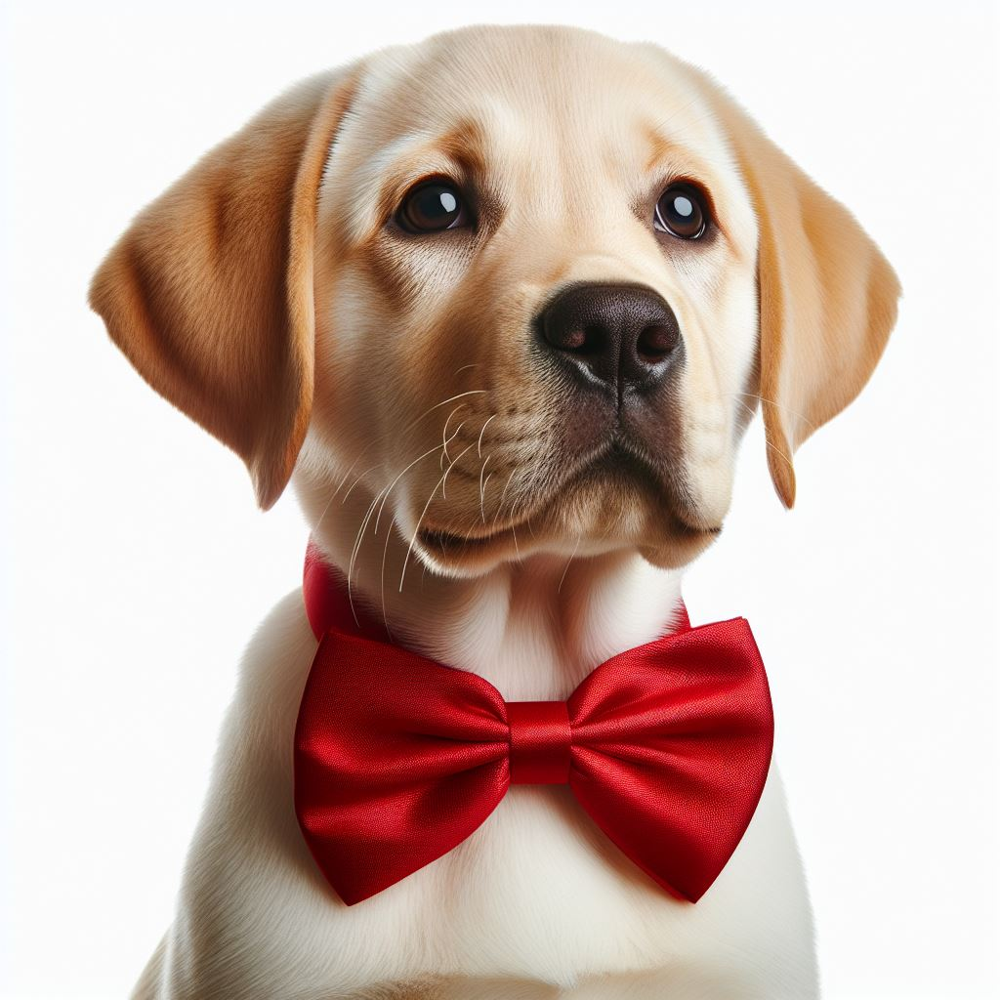
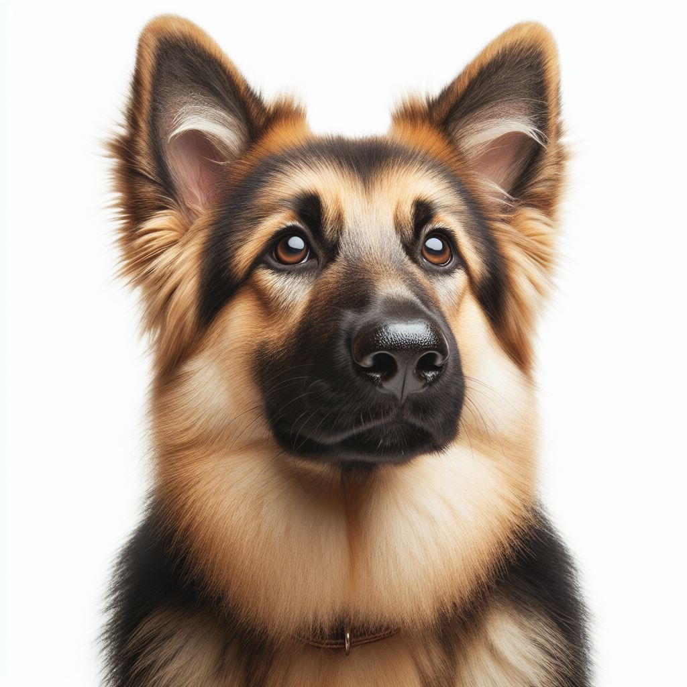
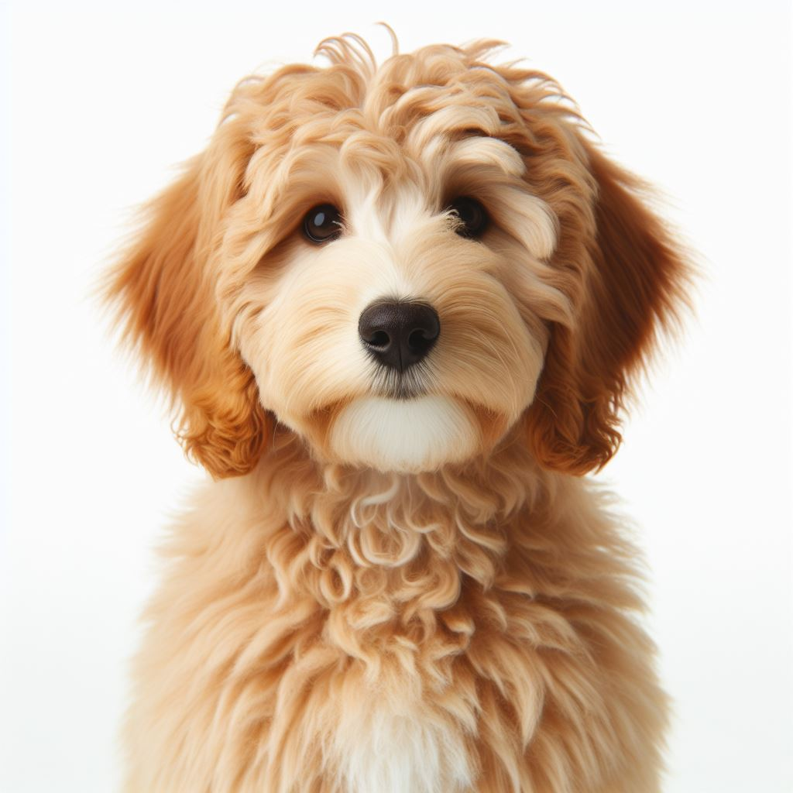
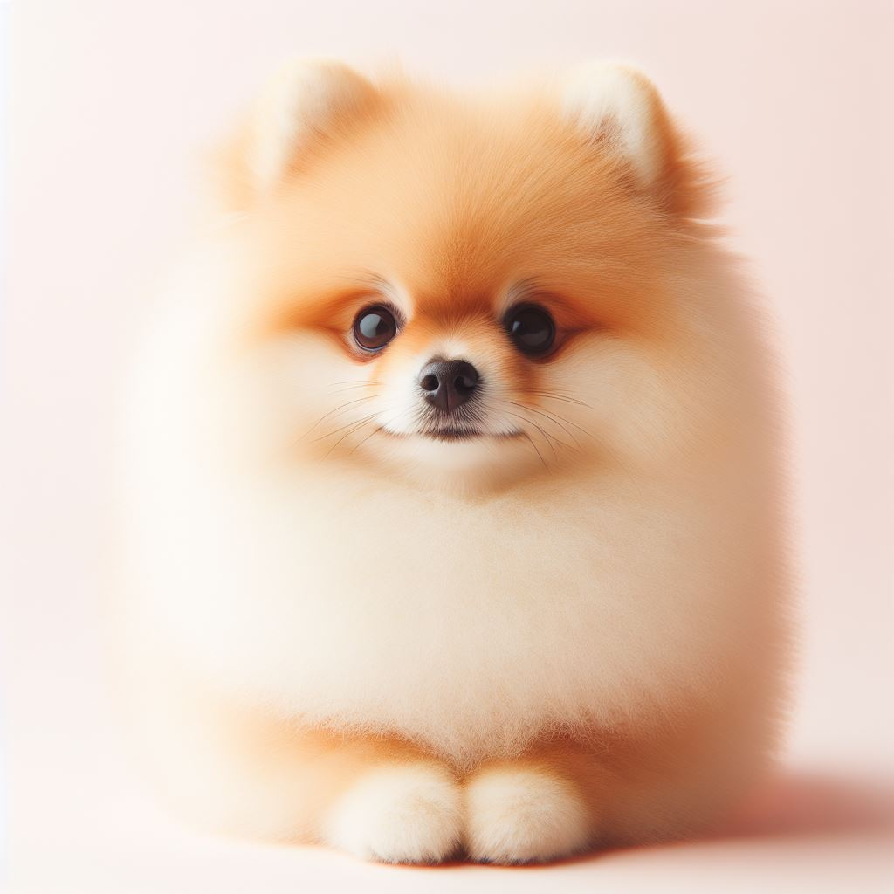
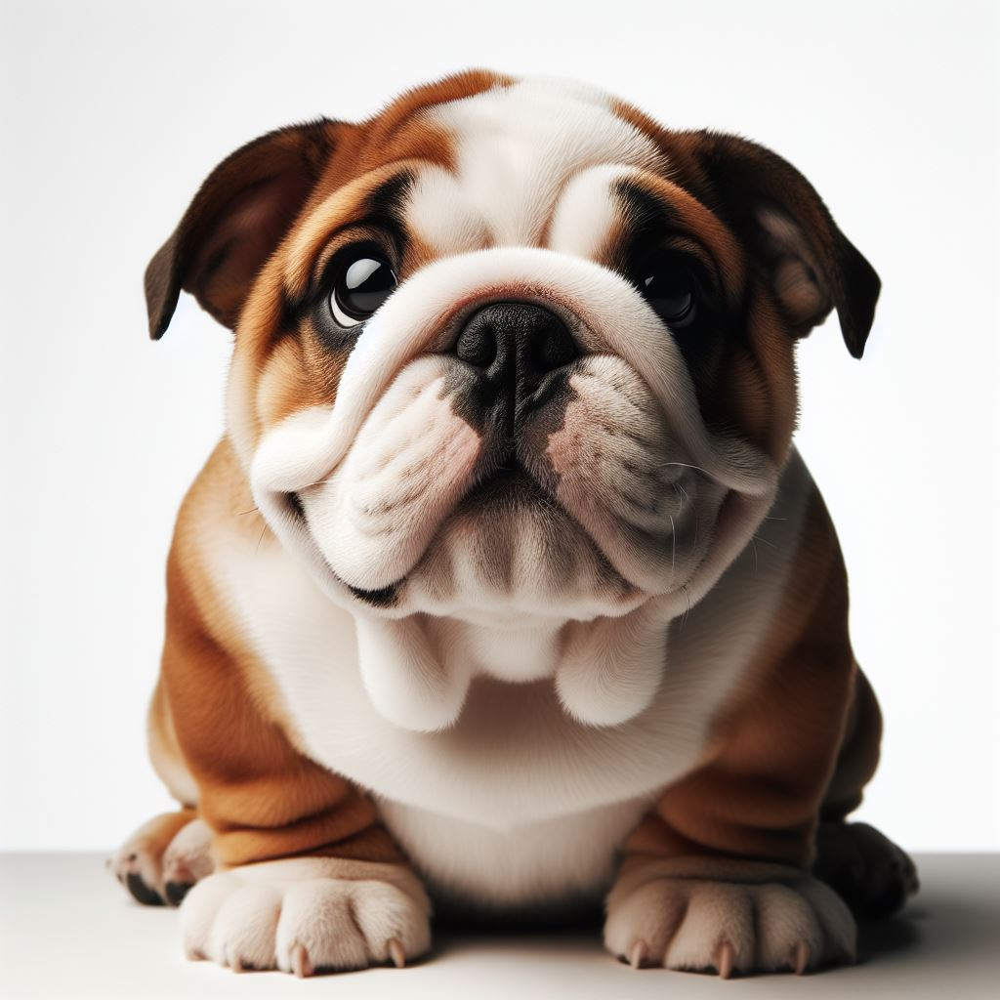

Labrador Retrievers
Life Expectancy: 10-14 years
Loyalty: High
Temperament: Friendly, outgoing
Size: Medium to large
▼
German Shepherds
Life Expectancy: 9-13 years
Loyalty: Very high
Temperament: Intelligent, loyal, protective
Size: Large
▼


Golden Doodles
Life Expectancy: 10-15 years
Loyalty: High
Temperament: Friendly, social
Size: Varies (depends on the Poodle parent size)
▼
Pomeranians
Life Expectancy: 12-16 years
Loyalty: Moderate to High
Temperament: Bold, confident
Size: Small
▼


Bulldogs
Life Expectancy: 8-10 years
Loyalty: High
Temperament: Calm, friendly
Size: Medium
▼